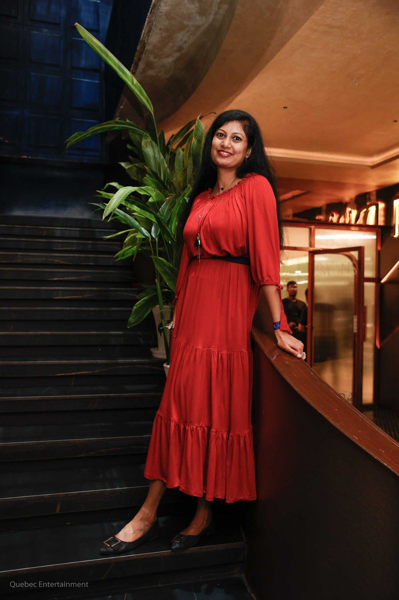
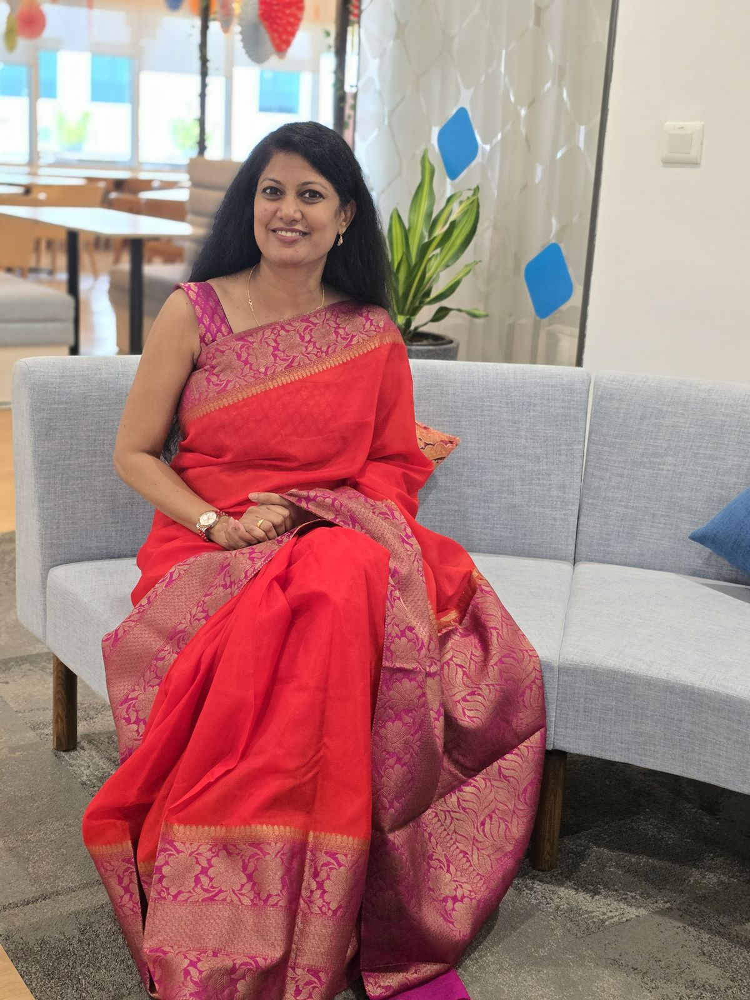
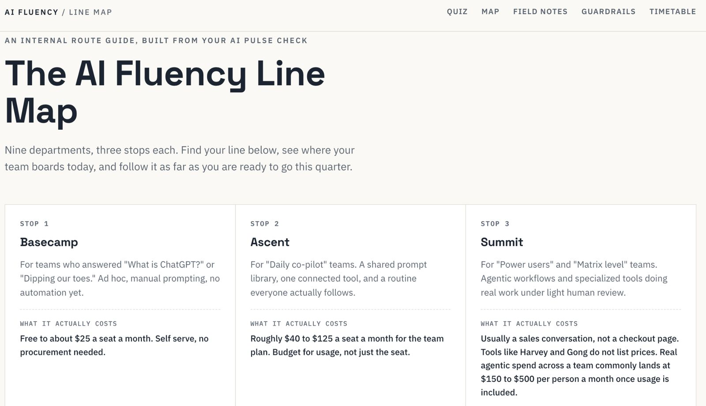
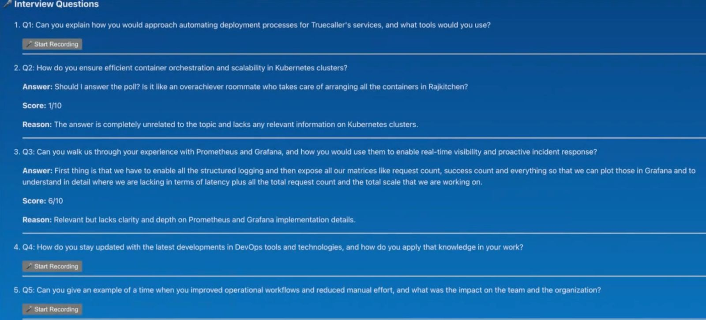
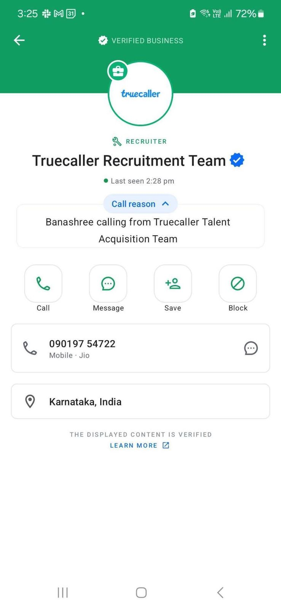
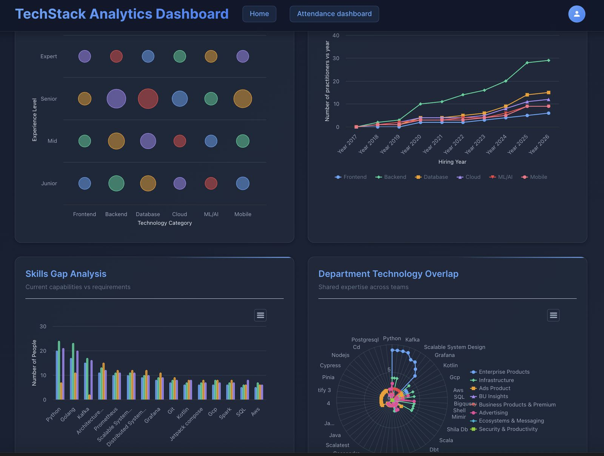
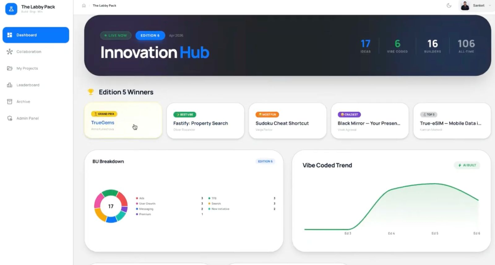
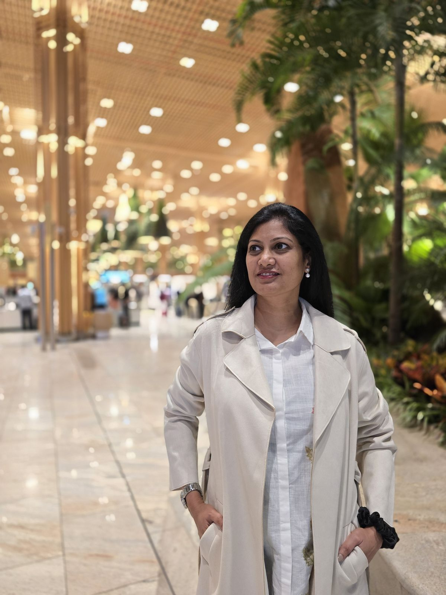
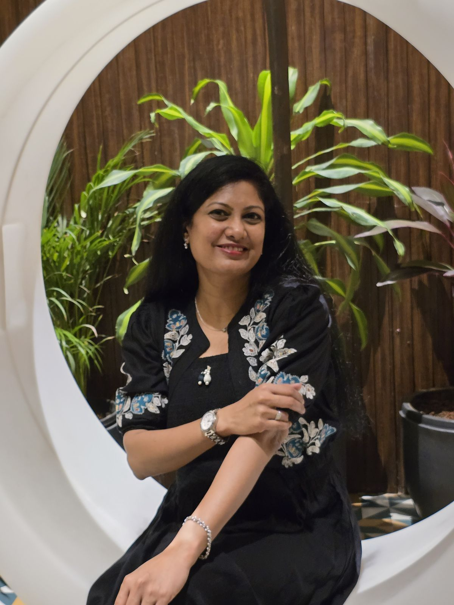
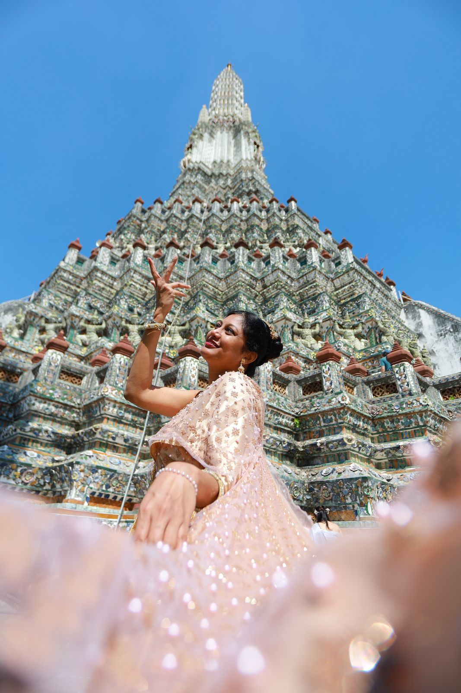

Apr 2002
Bachelor's Degree in Computer Science
Andhra University
A career story, told in chapters
The Story of Sangeetha
A journey with people, ideas and impact
HR Leader · People Person · Strategist
The experiences that shaped me. The questions that challenge me. The ideas I want to bring to life.
“Building workplaces people love, organisations that listen & thrive, and a culture where everyone feels comfortable approaching HR.”

Sneak peek
Eight short chapters. Read them in order, or skip straight to the one you're curious about. I won't mind.
pick a chapter, any chapter ♡
Chapter One
Every good story starts somewhere. Mine starts with people — and a belief that work can feel like belonging.
I didn't stumble into HR; it was a conscious decision.
The spark came early in my career, when I visited a public sector office. I noticed a young fresher running from desk to desk, tirelessly solving problems for frustrated citizens. Within a couple of hours, people who had been stuck in red tape for weeks or months left smiling.
That stayed with me. It resonated with my natural instinct to bring people joy — something I've carried since my school days, when I'd take part in or organise events just to see a sparkle in the audience's eyes.
Today, leading people strategy through transformation and growth feels natural to me. My focus remains on building an authentic workplace culture rooted in:

Chapter Two
I'm Sangeetha — a curious mind, a listener at heart, and a firm believer in people, purpose and progress.
With over two decades of experience across MNCs, GCCs, start-ups, and mid-sized and large organisations in the IT product and services industry, I've learned that every workplace and every person I meet brings a new perspective and an opportunity to grow.
For me, it's about understanding people, connecting their aspirations with business goals, and creating an environment where both can thrive.
What I value most about my journey is the chance to keep learning, navigate challenges, turn ideas into action, and make a meaningful difference.
I'm a work in progress — grounded in pragmatism, open to unconventional ideas, and always growing.
Chapter Three
Every story is worth telling. Here are the episodes — my career, my learning and the recognitions along the way, all on one timeline.
From my early career at Dell to leading HR at Truecaller, my journey has taken me across global organisations, technology businesses and evolving workplace environments. Along the way I've kept learning — from HR management and psychology to design thinking and AI — and every recognition reflects the people I've worked with and the impact we created together.
Apr 2002
Andhra University
Jan 2003 – May 2005 (2 Years 4 months) · Bengaluru
Dell International Services
Where my story at work began — a US company offering hardware support and services worldwide.
IT services2003 – 2005
Dell
Jan 2006 – Sep 2010 (4 Years 8 months) · Hyderabad
SumTotal Systems (later acquired by Cornerstone)
A US-based provider of talent management solutions.
LMS · SaaS · Product2006
SumTotal Systems
For leading and supporting a new office setup.
Dec 2006
Annamalai University
2007
SumTotal Systems
For exemplary performance and contribution.
Sep 2011 – Jun 2019 (7 Years 8 months) · Bengaluru
Softtek India (acquired Systech)
A LATAM IT service provider for business and enterprise solutions.
Services & IT Consulting2013
Softtek
For consistently delivering exceptional results while managing dual responsibilities.
2017
SHRM
Oct 2017
XLRI, Jamshedpur
2017
Softtek
For operational excellence and effective shared services management.
Jun 2019 – May 2024 (5 Years) · Bengaluru
Tact.ai → Aktana India (Aktana acquired Tact.ai)
A US-based life science, pharma sales & innovation company. I built the India team from the ground up and led it through the acquisition. The company shut down a few years later.
Health techAug 2019
IIPR, Bangalore
2022
IBM
2022
Tact.ai
For driving impactful People & Culture initiatives and managing the entire People function.
May 2024 – Present · Bengaluru
Truecaller International LLP
A Sweden-headquartered company building smart, safer and socially impactful services, best known for caller ID.
Consumer app tech2025
Bangalore HR Summit 2025, hosted by HR Shapers
For outstanding HR leadership and people transformation initiatives.
2026
IIM Bangalore
2026
Coursera
In progress
HRCI
Along this journey, I've had the chance to work with some wonderful people in 🇺🇸 the US 🇬🇧 the UK 🇲🇽 Mexico 🇯🇵 Japan & 🇸🇪 Sweden.
Chapter Four
Every character needs a toolkit. Mine has evolved with experience, challenges and curiosity. Hover over any area to see how it connects.
How I lead
Chapter Five
The projects I've led and the impact I've created. I believe in challenging the status quo, finding solutions and turning ideas into reality.
Give me a problem to solve, the freedom to explore possibilities, and the trust to lead — and I'll work to turn that opportunity into meaningful outcomes.

3 AI tools · department-specific training

Human-in-the-loop by design


8 engineering departments · 105 technologies

the best part ♡ One of the most rewarding outcomes has been seeing talented former colleagues I hired go on to leading organisations — and keeping the relationships we built together.
₹0 budget · built in-house
Points → merchandise
From building HR infrastructure and transforming people processes to exploring AI, enabling innovation and creating new business opportunities, my approach stays the same:
Chapter Six
A few people I've worked with have shared generous words that will always stay close to my heart — they're my motivation. Thank you to everyone who has trusted me.
You really made me feel that I was at home amongst dear friends… I have no words to thank you for having worked with me during these days, speaking with the night shift team members, even in very late hours for you. This gave me the opportunity to realise how talented and committed you are.
On hiring a Salesforce Implementation Engineer in a month, who joined within two weeks
Wow, congrats to all!! Thanks Sangeetha for finding this diamond in the rough and moving so quickly!!
“Great to find someone that can start right away. Amazing work!” — JP, VP Customer Success
“This is fantastic Sangeetha! Thank you!” — Karthi Swaminathan
On the AI training I hosted
What I really liked about this session was that it gave us something the whole team could connect with. Everyone had something to say, ask, think about, or laugh about. It created a nice energy in the team… Thank you, Sangeetha, for bringing us together around a topic that actually got everyone engaged. 🤖
On the appraisal process
Once again, a big thank you to Sangeetha and the HR team for your support during the appraisal process. We truly appreciate you taking our inputs and feedback into account to ensure well-deserved corrections were made — and for continuing to listen to our feedback. Your efforts mean a lot!
“Their responsiveness to feedback and successful advocacy made a real difference. Thank you for your thoughtful and impactful work!” — Shad Jamal, Director of Engineering, Ads · Truecaller
On employee benefits
Since a lot of people need to give their opinion, it sometimes feels like the finish line keeps moving forward as soon as you catch up — good endurance Sangeetha 👏 … Good job on adapting us to a more competitive offer in India 👏
Handling it all, right after a major surgery
In the last 2–3 months, Sangeetha has been driving a lot of activities that required significant coordination internally and externally… And she did this while staying on top of employee connects. Much appreciated. Thank you Sangeetha!
On 333 charitable e-cards for our CSR drive
Thank you for such a quick turnaround. Really appreciate it.
On my Best Shared Services Manager award
Recently I saw you in a video receiving the VOM of best leader staff, I can simply say that deserved recognition, congratulations!
Chapter Seven
If you've made it this far, we'll probably enjoy working together.
I'm looking for my next challenge in a senior HR leadership or business operations role, where I can shape people strategy, build strong organisations and connect business priorities with meaningful employee experiences.
If your organisation believes in building strong businesses by investing in people, culture and growth — let's talk.

Chapter Eight
All work and no fun? Not me. Here's how I rejuvenate.
A wanderlust at heart, always planning where to go next.
My little way of staying connected to nature.
I cook to show off a little — and keep everyone well-fed.
My ultimate playtime with colours.
If there's a skill to learn, I'm on it.
I didn't know I was one until I made the list!
The Globetrotter
If a kind-hearted benefactor ever offers to sponsor my travels, I might just spend the rest of my life exploring the world! Every journey is a lesson.

The Green Thumb
Gardening is my little way of staying connected to nature — and bringing a bit more green into everyday life.
The Culinary Artist
I cook to show off a little, delight the taste buds and, of course, keep everyone well-fed.
come hungry, leave happy
The Abstract Painter
I'm not a trained artist by any means, but I love experimenting with paint. It's my ultimate playtime with colours.

the dancer in meThe Lifelong Learner
Whether it's professional certifications or something completely new — if there's a skill to learn, I'm on it. Constant learning is how I grow, both professionally and personally.
The Accidental Adventurer
Until I made this list, I didn't realise I had an adventurous streak!
psst…
I'm a storyteller too. Ask me about any of these and you might end up asking me to write a book 😀
Let's talk